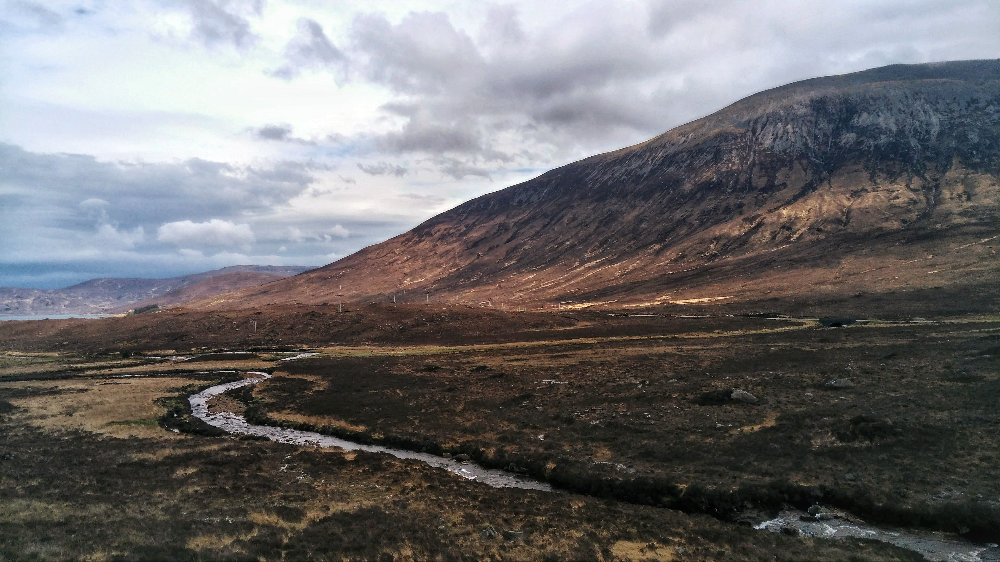
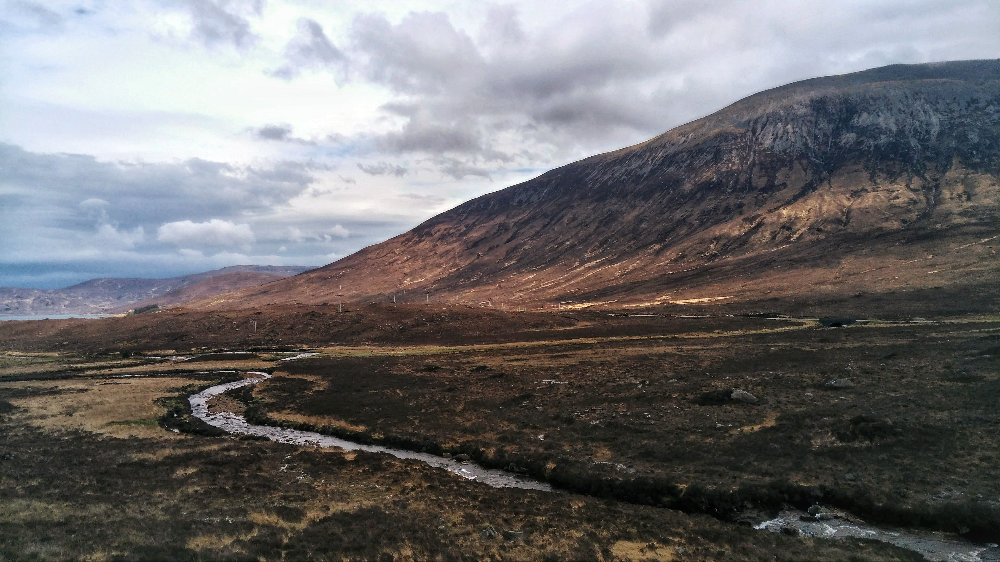
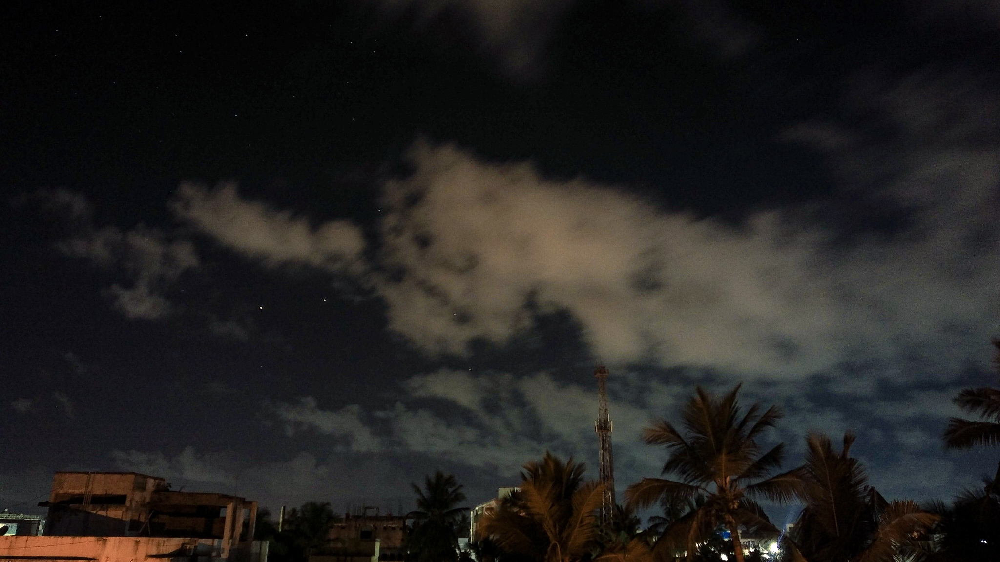
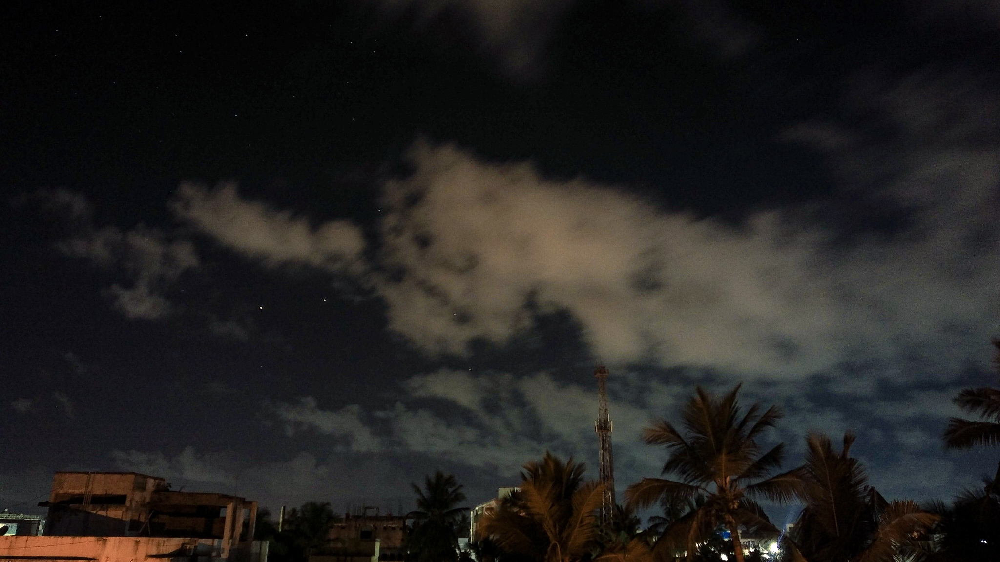
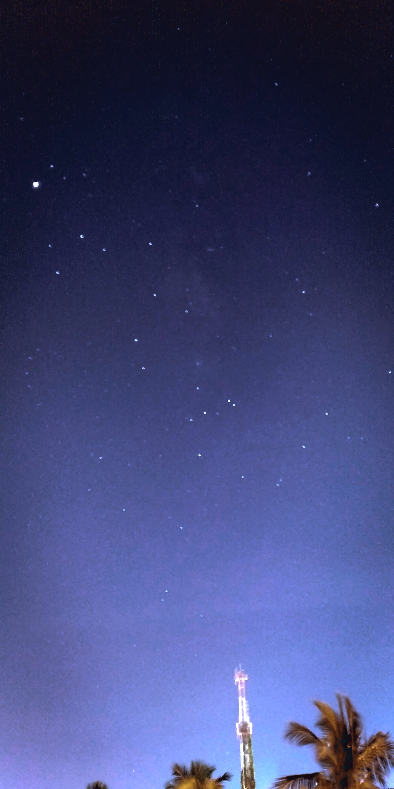
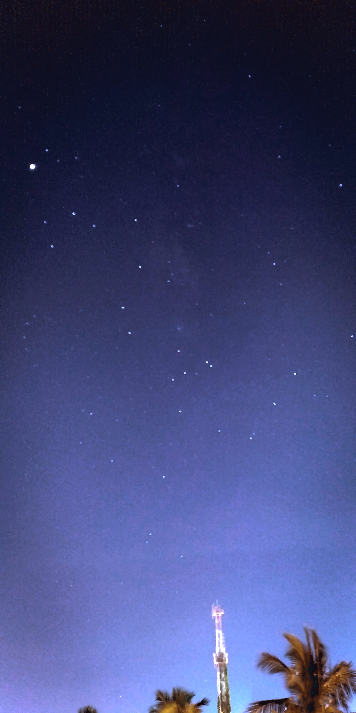
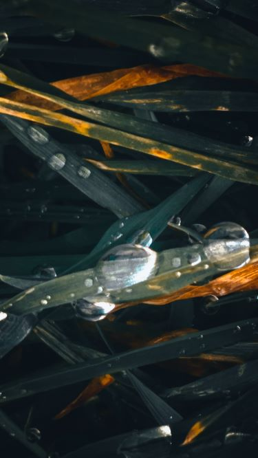
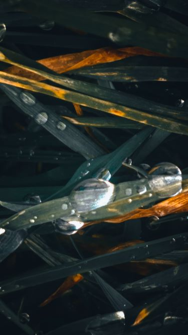

About
Hi, I'm Nitish, chennai based photographer. I've been capturing life's moments for past 4 years. My goal is to evoke emotions and tell stories through my work. I find inspiration in nature and human experiences, and I'm open to collaborations. My main style of photography includes starry sky, miniscule macro shots, architectures and gigantic landscapes. Let's connect and explore the world through my lens.

 


 



 


 
